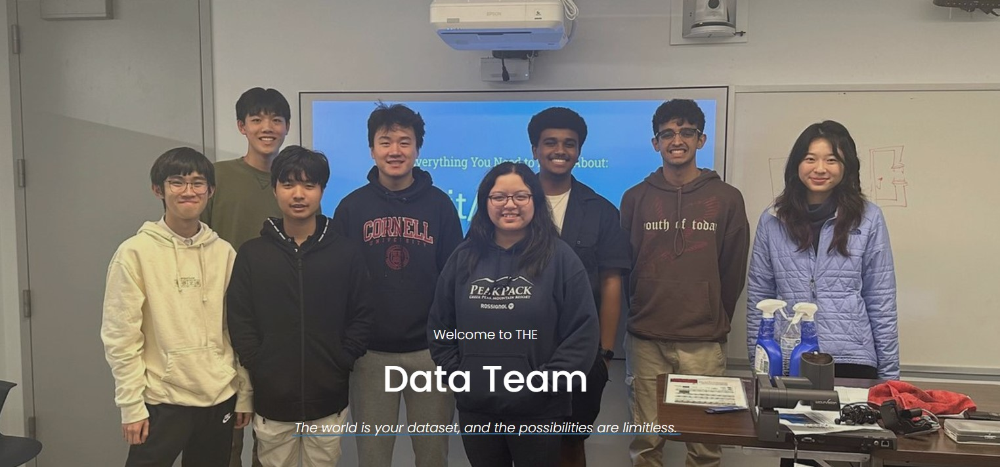

Project Description
During my time on the Water subteam, I trained predictive models and visualized data to tackle local issues such as Harmful Algal Blooms in Cayuga Lake. I also took charge on the Data subteam and managed team’s GitHub repository while holding public workshops to teach best practices in collaborative programming.
Takeaways
- Leadership: I was able to take charge of several aspects of the Data subteam's projects including the GitHub maintenance. This opportunity to lead helped me develop my communication abilities and taught me accountability when managing a team.
- Understanding the community: The project team primarily tackled local issues and there were several direct outreach events in which we visited nature centers to discuss pressing issues. This opportunity to understand the reality of the problems we are solving was invaluable and taught me to value the impact I make on the community.